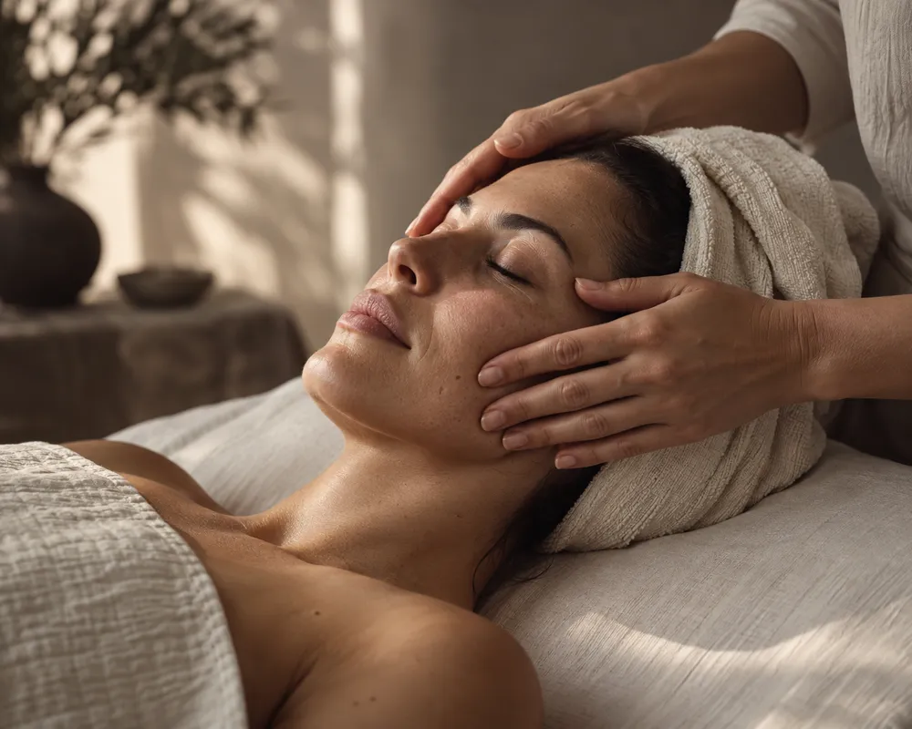
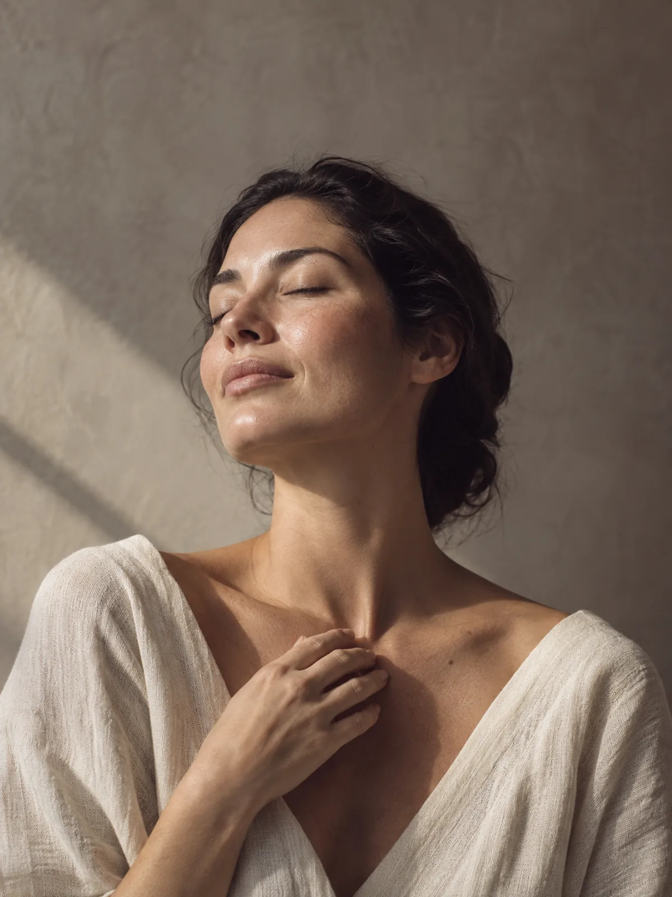
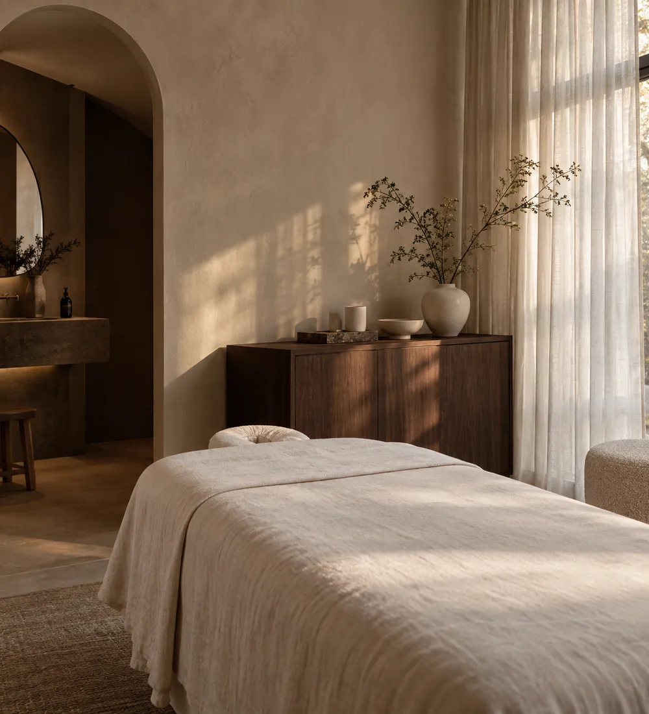

HET SIGNATURE RITUEELDe Velune Facial
Reiniging, zachte massage en een verzorgend masker. Een volledig uur om weer even te landen.
60 min € 85 demoprijs
HUIDVERZORGING & RUST
Persoonlijke facials en zachte rituelen.
Met aandacht voor je huid, en voor hoe jij je voelt.

DE VELUNE-FILOSOFIE
Eerst luisteren, dan verzorgen.
Bewust gekozen verzorging.
Tijd die helemaal van jou is.
HET BEHANDELMENU
Een frisse start of even helemaal niets.
Er is ruimte voor allebei.

HET SIGNATURE RITUEELReiniging, zachte massage en een verzorgend masker. Een volledig uur om weer even te landen.
Een zacht, hydraterend verzorgingsmoment voor een comfortabel huidgevoel.
Reiniging en een fris masker. Een korte pauze met aandacht voor je gezicht.
Persoonlijke vormgeving van je wenkbrauwen, afgestemd op jouw uitstraling.
Een zachte gezicht-, nek- en schoudermassage. Even uit je hoofd, in het moment.

DE STUDIO
Bij Velune draait een behandeling niet om méér doen. Maar om even stilstaan bij wat prettig voelt. Een rustige ruimte, een helder advies en alle aandacht voor jou.
We beginnen met je wensen en voorkeuren.
Een ritueel op een rustig, comfortabel tempo.
Eenvoudige verzorgingstips voor thuis.
ZO KAN EEN KLANTERVARING ERUITZIEN · VOORBEELDREVIEW
“Niet alleen een fijn moment voor mijn huid.
Ook voor mijn hoofd.”
Fictieve review ter illustratie van deze portfolio-demo.
GOED OM TE WETEN
Een paar antwoorden voordat
je jouw moment kiest.
Begin met de treatment finder. Die vergelijkt je voorkeuren en beschikbare tijd met ons demomenu. Een echte studio bespreekt vóór je behandeling altijd je wensen en eventuele gevoeligheden.
De Velune Facial is in dit concept een rustig kennismakingsritueel. Bespreek bij een echte afspraak vooraf je huidgevoeligheden en productvoorkeuren met de behandelaar.
Voor dit demobezoek hoef je niets te doen. Bij een echte behandeling ontvang je vooraf praktische informatie van de studio. Deel medische vragen met een gekwalificeerde zorgverlener.
Nee. Velune is een fictieve portfolio-demo van LK Webdesign. Je kunt de boekingsroute uitproberen, maar er wordt geen afspraak gemaakt en er worden geen gegevens verstuurd.
ER MAG OOK TIJD VOOR JOU ZIJN
Ontdek de boekingsdemo. Zonder gegevens of verplichtingen.